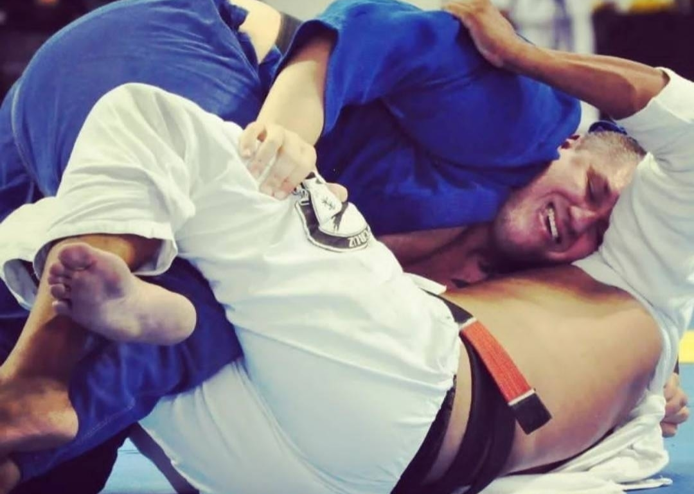

Minha vida no Jiu Jitsu

Iniciei minha trajetória no mundo das lutas ainda criança. Aos 7 anos, minha mãe me matriculou no judô,
e foi ali que dei meus primeiros passos nos tatames. Com o tempo, fui evoluindo e alcancei a faixa amarela.
No entanto, por motivos pessoais, precisei interromper os treinos. Mesmo afastado, a vontade de voltar a treinar sempre esteve presente.
Procurei uma nova academia, encontrei uma perto de casa e retornei com entusiasmo, mas a vida teve outra reviravolta e, novamente, precisei parar.
Foi em 2000 que ouvi falar sobre uma arte marcial que foi criada e começava a ganhar força no Brasil: o Jiu Jitsu.
Até então, eu não conhecia muito sobre a modalidade, mas a curiosidade e a vontade de voltar aos treinos falaram mais alto e foi assim que iniciei.
Mesmo afastado do judô, os ensinamentos que adquiri nunca se perderam.
Isso facilitou bastante minha adaptação ao Jiu Jitsu, tanto física quanto tecnicamente.
Em 2001, graduei faixa azul e, por ironia do destino, comecei a dar meus primeiros passos como professor.
Naquela época, não era comum encontrar profissionais que enxergavam as artes marciais como profissão principal,
muitos davam aulas como complemento de renda e ainda assim, resolvi arriscar.
A decisão se mostrou acertada: evoluí como aluno, como atleta e como professor.
Mantinha meus treinos e participava de campeonatos — estava completamente envolvido com o Jiu Jitsu.
Em 2003, conquistei a faixa roxa. Mas no ano seguinte, minha realidade ficou mais difícil.
Meus pais nunca tiveram condições financeiras para me manter apenas treinando e dando aulas.
Tive que começar a trabalhar e o Jiu Jitsu acabou ficando em segundo plano.
Ainda assim, nos fins de semana, continuava indo à academia para treinar e repassar os ensinamentos aos alunos.
Em 2005, alcancei a faixa marrom. As responsabilidades aumentaram tanto como professor quanto como atleta, e senti a necessidade de me organizar
para retomar os treinos com foco. Nesse mesmo ano, fundei minha própria academia e mergulhei de vez na vida de professor,
dedicando-me intensamente ao ensino e ao aperfeiçoamento técnico.
Todo esse esforço valeu a pena: em dezembro de 2012, fui graduado faixa preta.
Em 2021, enfrentei um dos momentos mais difíceis da minha vida, o falecimento da minha irmã.
Na época, eu cursava Educação Física, visando aprimorar ainda mais meu trabalho na academia.
No entanto, o luto abalou profundamente minha estrutura. Após conversas com minha esposa, decidimos vender a academia.
Voltei então para a área de tecnologia, onde já tinha formação desde 1997 em Processamento de Dados.
Desde então, sigo treinando — agora sem as pressões das aulas — mas com a mesma paixão e dedicação de sempre.
Continuo me aperfeiçoando e me aprofundando no Jiu Jitsu como se fosse a primeira vez que piso no tatame.
OSS.
Minha Equipe